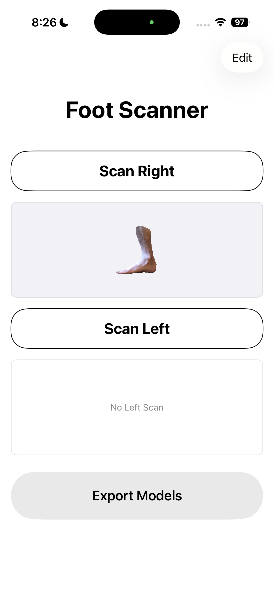
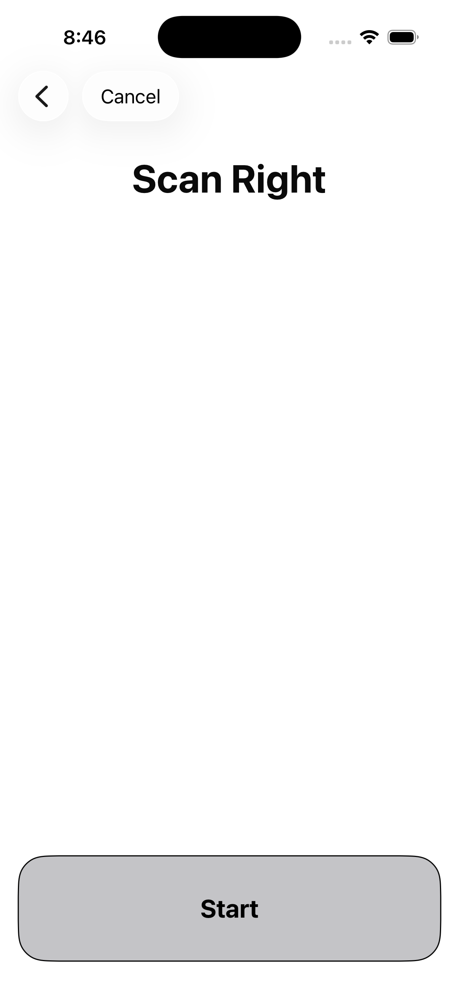

iPhone × LiDAR × AI 足型診断
iPhoneで足をスキャンするだけ。
170名分の足型データから学習したAIが
幅広・甲高・推奨サイズを診断します。無料です。
iPhone 12 Pro以降（LiDAR搭載モデル）が必要です


こんな悩みありませんか？
既製靴が合わないのは足の問題ではありません。足の形を無視した靴を選んでいるだけです。
幅がきつく、親指が押されて痛い
甲が高くて紐を締めても脱げそうになる
長時間歩くと足裏・腰が疲れやすい
オーダーメイドに興味はあるが、店に行く時間がない
解決策
店に行かず、iPhoneだけで。診断は無料。靴を注文するかどうかは、あなたが決めます。
01 / SCAN
Apple LiDARセンサーで足の全形状を3D復元。足長・足幅・甲高・JISサイズを計測します。スキャンは左右合わせて約10分。
02 / DIAGNOSE
170名分の足型データから学習したニューラルネットワークが、あなたの足の特徴を分析。幅広・甲高・推奨オーダー仕様を提示します。診断はiPhone上で完結し、足のデータは外部に送信されません。
03 / ORDER
診断結果をそのまま提携靴店の注文フォームに引き継ぎ。あなたの足型データをもとに職人が一足ずつ製作します。製作価格は40,000円前後。
使い方
アプリの音声ガイドに従い、左右の足を順にスキャン。椅子に座ってiPhoneをかざすだけです。
スキャン完了後、「Diagnosis」ボタンをタップ。AIが足の特徴を分析し、診断結果と推奨サイズを表示します。
「Order Shoes」ボタンをタップすると、計測値が入力済みの注文フォームが開きます。スキャンデータをアップロードして送信するだけです。
診断サンプル
数値とAI診断文で、足の特徴がはっきりわかります。
170名のデータベースと照合した結果、あなたの足に近い特徴を持つ方々には次の傾向が見られます。
幅広傾向（5名中4名）／甲高傾向（5名中3名）
靴職人の知見に基づき、幅広EE・甲高設計でのオーダーを推奨します。
幅広EE・甲高設計。このサイズの組み合わせは既製靴には存在しません。
技術
写真3枚で測る既存サービスとは、計測の原理が異なります。
建築・医療分野でも使われる精密センサーで足の3D形状を直接取得。フォトグラメトリーよりも高精度で、環境光の影響を受けません。
靴職人がラベリングした170名分の足型データで学習したAIが、スキャン点群から足の特徴を抽出。推論はiPhone上で完結し、足のデータは外部に送信されません。
「幅広」「甲高」「外反母趾傾向」といった職人の判断基準を足型データと紐づけ学習データとして蓄積。熟練職人が製作するオーダーラインと直接接続します。
プライバシー
スキャンデータおよびAI診断はiPhone上のみで処理されます。足型データがサーバーに送信されることはありません。靴の注文を希望する場合のみ、ご自身の操作でスキャンデータをエクスポートし、注文フォームからアップロードしていただきます。
計測精度: ±3〜5mm程度の誤差があります。
AI診断は170名分のデータベースを基にした類似ケースの提示であり、医療診断ではありません。足の痛みや変形が気になる場合は専門医にご相談ください。
対応機種: iPhone 12 Pro以降（LiDAR搭載モデル）。
製作価格は提携靴店の価格体系に準じます（目安40,000円前後）。